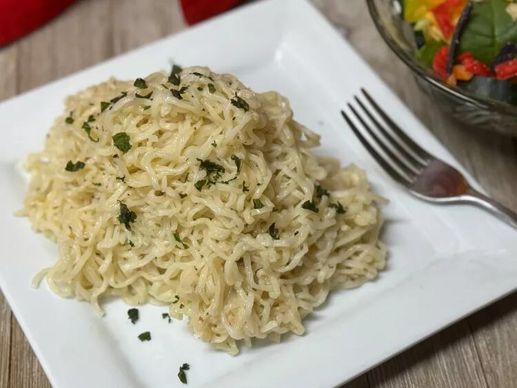

Parmesan Garlic Ramen

Description
This quick and easy ramen recipe can satisfy the craving for an Italian-style noodle dish!
Ingredients
- 3 (3-ounce) packages instant ramen noodles, seasoning packets discarded
- 3 tablespoons unsalted butter
- 2 cloves garlic, minced
- 1 cup shredded Parmesan cheese
- 1/2 teaspoon dried Italian seasoning
Steps
- Bring 6 cups water to a boil in a large soup pot; add noodles and boil for 3 minutes, stirring occasionally. Drain, reserving 1 cup of cooking, water and set aside.
- Melt butter in a large skillet over medium heat. Add garlic and cook until fragrant, about 1 minute.
- Stir in Parmesan cheese, Italian seasoning, and reserved cooking water. Cook until cheese is melted and sauce is thick, about 5 minutes.
- Add noodles to the skillet, and toss gently until heated through . Top with parsley if desired, and serve immediately.
Home